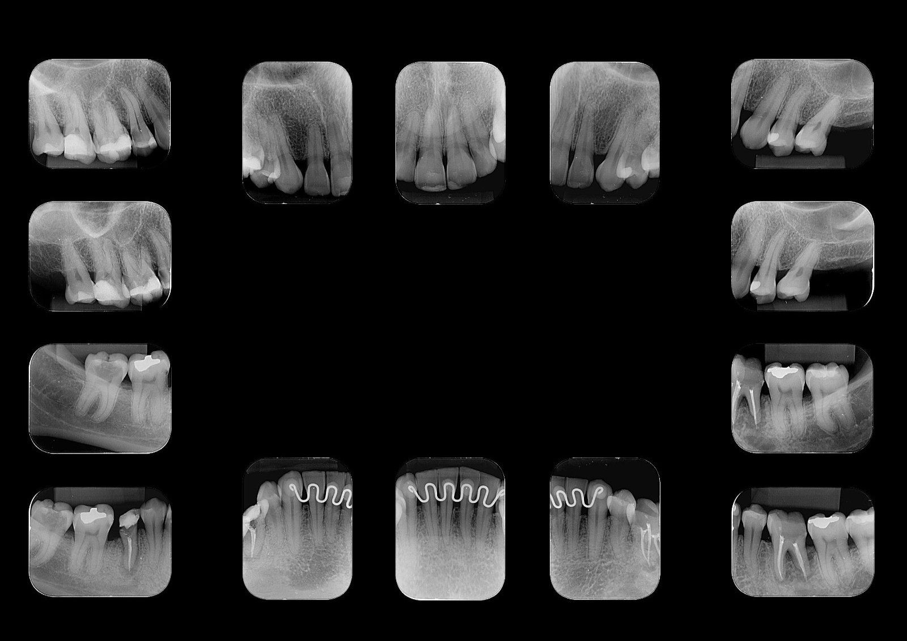

Tecnologia e precisão para diagnósticos mais seguros
Exames de imagem odontológicos com alta definição digital, agilidade e menor exposição à radiação em Taquaritinga e região.
Especialistas em imagem odontológica
A Radix Radiologia Odontológica é referência em exames de imagem para odontologia em Taquaritinga e região. Combinamos equipamentos de última geração com uma equipe altamente qualificada para oferecer diagnósticos precisos e confiáveis.
Nossa missão é apoiar dentistas e pacientes com exames de alta qualidade, contribuindo para planejamentos mais seguros e tratamentos mais eficientes. Trabalhamos com tecnologia digital, garantindo imagens nítidas, rapidez e menor exposição à radiação.
Exames de imagem com precisão digital
Tecnologia avançada para exames com qualidade de imagem superior, agilidade e conforto.
Radiografia Panorâmica
A radiografia panorâmica é um exame de imagem que proporciona uma visão ampla de toda a cavidade bucal em uma única tomada, permitindo a avaliação simultânea das arcadas superior (maxila) e inferior (mandíbula), além das estruturas adjacentes.
Por meio deste exame, é possível identificar alterações como lesões cariosas extensas, reabsorções ósseas e radiculares, granulomas, cistos, tumores, dentes inclusos/impactados e fraturas decorrentes de traumas.
Trata-se de um exame extraoral, rápido, confortável e de baixa exposição à radiação, frequentemente solicitado como exame inicial para planejamento de tratamentos, acompanhamento da saúde bucal e como exame pré-operatório.

Periapical Boca Toda
Também conhecida como levantamento periapical completo, é um conjunto de radiografias intraorais que permite a avaliação detalhada de todos os dentes e de suas estruturas de suporte.
O exame é composto por 14 radiografias periapicais:
- 7 da arcada superior (maxila)
- 7 da arcada inferior (mandíbula)
As imagens são obtidas por meio de pequenos sensores digitais posicionados no interior da cavidade bucal, proporcionando alta definição e riqueza de detalhes das estruturas dentárias e do tecido ósseo adjacente.
Para pacientes com dentição decídua (dentes de leite), o exame é realizado com 10 radiografias periapicais (5 superiores + 5 inferiores).
Indicações
- Lesões cariosas
- Reabsorções ósseas interdentais
- Alterações periapicais (granulomas e cistos)
- Avaliação do periodonto e estruturas de suporte
Tomografia Cone Beam
Orthophos SL 3D
A Clínica Radix oferece exames de Tomografia Computadorizada Cone Beam (CBCT) realizados com o moderno Orthophos SL 3D, equipamento de última geração da Dentsply Sirona, reconhecido mundialmente por sua excelência em diagnóstico por imagem.
Permite a obtenção de imagens tridimensionais de alta resolução das estruturas maxilofaciais, com visualização detalhada de dentes, ossos, articulações e vias anatômicas com extrema precisão.
As imagens 3D permitem mensurações exatas e análise em múltiplos planos, proporcionando maior previsibilidade nos tratamentos.
Alta definição, baixa radiação
Tecnologia avançada com protocolos de baixa dose, garantindo segurança sem comprometer a acurácia.
Tecnologia Sharp Layer
Tecnologia exclusiva que melhora a nitidez automaticamente, ajustando o foco nas camadas anatômicas de interesse.
Integração digital completa
Arquivos compatíveis com softwares de planejamento e escaneamentos intraorais para fluxos digitais.
Conforto e rapidez
Exame não invasivo, com aquisição de imagem em poucos segundos.
Aplicações clínicas
- Planejamento de implantes dentários
- Avaliação de dentes inclusos
- Análise de lesões ósseas, cistos e tumores
- Estudo das articulações temporomandibulares (ATM)
- Planejamento cirúrgico e ortodôntico
- Endodontia avançada (canais e fraturas)
Escaneamento Intraoral
A Clínica Radix oferece o Escaneamento Intraoral digital, uma tecnologia avançada que proporciona alta precisão, rapidez e excelente visualização das estruturas dentárias.
O exame é realizado por meio de um scanner intraoral que captura, em tempo real, imagens detalhadas das arcadas dentárias, gerando arquivos digitais em formato STL, amplamente utilizados na odontologia digital.
Máximo conforto para o paciente
Substitui as moldagens convencionais, eliminando desconfortos como náuseas e sensação de sufocamento.
Simulação de resultados
Permite a visualização prévia dos resultados, facilitando a apresentação do tratamento ao paciente e aumentando a segurança na tomada de decisão.
Conectividade e arquivos abertos
Os arquivos STL podem ser enviados diretamente para laboratórios de escolha do profissional, otimizando o fluxo para alinhadores ortodônticos, próteses, guias cirúrgicas e modelos impressos. São compatíveis com sistemas abertos e podem ser integrados a exames de tomografia Cone Beam para planejamentos cirúrgicos avançados.
Documentação Ortodôntica e Ortopédica
A documentação ortodôntica é um conjunto completo de exames que permite ao Cirurgião-Dentista avaliar o crescimento ósseo, o posicionamento dentário e as relações faciais do paciente, possibilitando um planejamento preciso e individualizado do tratamento.
Documentação Ortodôntica e/ou Ortopédica
Composição:
- Radiografia Panorâmica com laudo
- Telerradiografia lateral de crânio
- Modelos de estudo das arcadas (escaneamento intraoral 100% digital)
- Fotografias intra e extraorais
- Traçados cefalométricos
Documentação Digital 100% Sustentável
A Clínica Radix trabalha com documentação totalmente digital, eliminando o uso de materiais físicos e proporcionando maior precisão, agilidade no envio e armazenamento seguro das informações.
Todos os exames são disponibilizados em formato digital, facilitando o acesso e o planejamento.
100% sustentávelDocumentação para Alinhadores Invisíveis
Conjunto de exames específicos que permite o planejamento virtual do tratamento ortodôntico com alinhadores.
- Escaneamento intraoral com software de manipulação digital
- Radiografias
- Fotografias intra e extraorais
- Análises cefalométricas
Possibilita a simulação dos movimentos dentários e maior previsibilidade dos resultados.
Por que escolher a Radix
Tecnologia, precisão e cuidado para a melhor experiência em radiologia odontológica.
Tecnologia digital avançada
Equipamentos de última geração para resultados superiores.
Imagens de alta precisão
Nitidez e detalhamento que fazem diferença no diagnóstico.
Menor dose de radiação
Tecnologia digital que reduz significativamente a exposição.
Agilidade nos exames
Resultados rápidos para que o tratamento não espere.
Apoio ao planejamento
Exames que auxiliam o dentista em cada etapa do tratamento.
Conforto no atendimento
Ambiente acolhedor e equipe atenciosa para sua tranquilidade.
Segurança no diagnóstico
Precisão que gera confiança para profissionais e pacientes.
Escaneamento Intraoral 3D
A evolução do molde dental. Substitui a massa convencional por um escaneamento digital preciso, rápido e confortável.
Molde Digital
Precisão submicrométrica para resultados superiores em próteses e alinhadores.
Tomografia vs Radiografia
Conheça as características de cada exame e quando cada um é indicado.
Tomografia
Exame tridimensional que permite visualizar com precisão as estruturas ósseas, dentais e tecidos adjacentes em múltiplos planos.
- Visualização tridimensional completa
- Detalhamento superior de estruturas ósseas
- Ideal para implantes e cirurgias
- Avaliação de lesões complexas
Radiografia
Exame bidimensional rápido e eficiente, essencial para diagnósticos de rotina e acompanhamento clínico.
- Diagnósticos de rotina clínica
- Exame rápido e prático
- Baixa dose de radiação
- Panorâmica e periapical disponíveis
Como a tomografia auxilia o tratamento
Ferramenta essencial para o planejamento e execução de diversos procedimentos odontológicos.
Cirurgias
Planejamento preciso de extrações e cirurgias bucomaxilofaciais.
Implantes
Avaliação óssea detalhada para posicionamento ideal.
Canal
Visualização precisa da anatomia radicular e lesões periapicais.
Avaliação Óssea
Análise de densidade e volume ósseo para decisões seguras.
Planejamento
Apoio visual completo para as melhores decisões de tratamento.

Imagem: Coronation Dental Specialty Group (CC BY 3.0)
Radiografia Panorâmica
A radiografia panorâmica oferece uma visão ampla e completa de todas as estruturas bucais em uma única imagem. Fundamental para avaliação odontológica geral.
Atendemos pacientes e dentistas
Nossa estrutura está preparada para oferecer a melhor experiência a cada público.
Para Pacientes
Seu conforto e segurança são nossa prioridade. Cada exame é realizado com cuidado e tecnologia de mínima exposição.
- Atendimento acolhedor e humanizado
- Exames rápidos e confortáveis
- Tecnologia digital com menos radiação
- Resultados claros e fáceis de entender
Para Dentistas
O suporte diagnóstico que o profissional precisa. Imagens de alta precisão para embasar decisões clínicas.
- Imagens HD para diagnóstico preciso
- Apoio ao planejamento de tratamentos
- Tomografia 3D para casos complexos
- Agilidade na entrega dos resultados
Agende seu exame com a Radix
Tecnologia e precisão para o seu diagnóstico odontológico.
Centro — Taquaritinga/SP
08h às 11h30 — 13h30 às 17h30